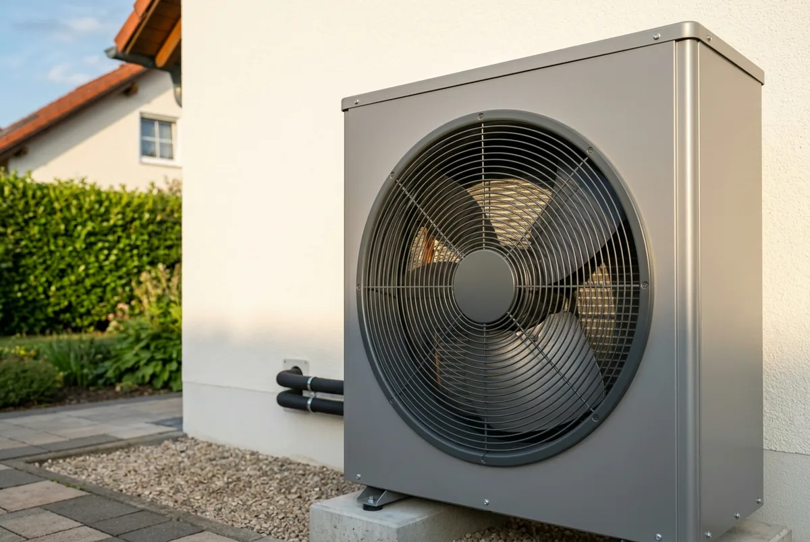
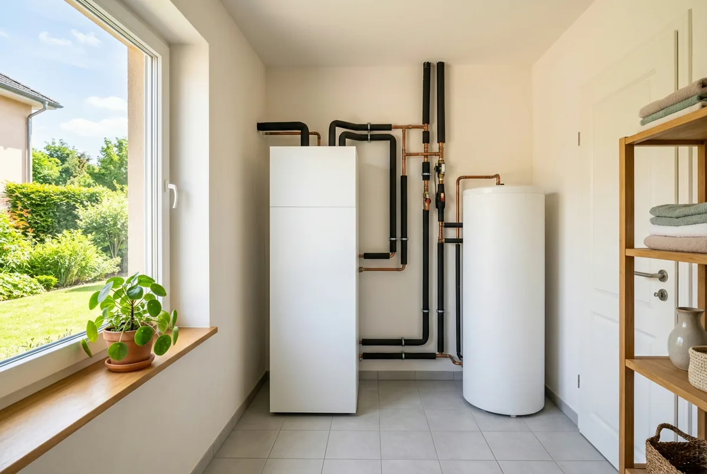

Inhaltsverzeichnis
- Warum Ranglisten in die Irre führen
- Kriterium 1: Raumweise Heizlast
- Der teuerste Fehler: Überdimensionierung
- Kriterium 2: Jahresarbeitszahl und SCOP
- Kriterium 3: Modulation und Taktung
- Kriterium 4: Schall und Aufstellort
- Kriterium 5: Kältemittel und Stichtag 2028
- Kriterium 6: Warmwasserbereitung
- Kriterium 7: Netzdienlichkeit (§ 14a EnWG)
- Kriterium 8: Förderfähigkeit
- Kriterium 9: Wartung, Garantie, Ersatzteile
- Fazit: alle neun Kriterien in der Tabelle
- Kurz und direkt beantwortet
- Häufige Fragen
Das Wichtigste in Kürze
- Auslegung schlägt Fabrikat: Ohne raumweise Heizlastberechnung nach DIN EN 12831 schwanken Angebote für dasselbe Gebäude zwischen 6 und 12 kW (Verbraucherzentrale Saarland, 24.09.2025).
- SCOP ist nicht die Jahresarbeitszahl: Der SCOP ist ein genormter Prüfstandswert, die Jahresarbeitszahl der reale Wert Ihrer Anlage.
- Größer ist schlechter: Ein zu großes Gerät taktet, das beeinträchtigt laut Bundesverband Wärmepumpe Effizienz und Lebensdauer. Anders als beim Gaskessel nützt Reserve nichts.
- Schall wird verwechselt: 55 dB(A) tags und 40 dB(A) nachts sind im allgemeinen Wohngebiet die Immissionsrichtwerte der TA Lärm am Nachbargrundstück, nicht die Schallleistung des Geräts (wiedergegeben im LAI-Leitfaden, 28.08.2023).
- Kältemittel mit Stichtag: Ab dem 1. Januar 2028 werden nach der Richtlinie BEG EM nur noch Wärmepumpen mit natürlichen Kältemitteln gefördert.
- Förderkriterien sind Kaufkriterien: BAFA-Liste, 150 bzw. 125 Prozent Effizienz, Arbeitszahl ab 3,0 nach VDI 4650, Schnittstelle nach § 14a EnWG, für Luft-Wasser-Wärmepumpen 10 dB unter Ökodesign 813/2013.
Warum es „die beste Wärmepumpe für den Altbau“ nicht gibt
„Die beste Wärmepumpe für den Altbau“ gibt es nicht: Welches Gerät gut läuft, entscheidet das Gebäude, nicht der Herstellername. Wer danach sucht, erwartet trotzdem einen Namen; Modellranglisten bedienen diese Erwartung, und führen in die Irre. Zwei identische Geräte können in vergleichbaren Altbauten weit auseinanderliegende Betriebskosten verursachen. Der Unterschied liegt in der Auslegung, der hydraulischen Einbindung und der Regelung.
Den Rahmen setzt das Gebäude: die tatsächliche Heizlast, die nötige Vorlauftemperatur an einem kalten Tag, die Heizflächen, der Platz im Technikraum, der Abstand zur Grundstücksgrenze. Erst wenn diese Größen feststehen, lässt sich sagen, welches Gerät in Frage kommt.
Vorausgesetzt ist, dass die Grundsatzfragen geklärt sind: ob sich eine Wärmepumpe im Altbau lohnt, ob Ihr Gebäude die Voraussetzungen mitbringt (Selbstcheck zur Eignung) und ob es eine Luft-Wasser- oder eine Luft-Luft-Anlage werden soll. Hier geht es um die Auswahl innerhalb der Kategorie Luft-Wasser.
Kriterium 1: Auslegung nach raumweiser Heizlast statt Faustformel
Die Heizlast ist die Leistung, die Ihr Haus am kältesten Auslegungstag braucht. Berechnet wird sie nach DIN EN 12831: raumweise, also für jeden Raum einzeln, aus Bauteilaufbau, Flächen, Luftwechsel und Auslegungstemperatur. Alles andere ist Schätzung.
Wie groß der Unterschied ist, hat die Verbraucherzentrale Saarland am 24. September 2025 beschrieben: Ohne belastbare Berechnung schwanken die Leistungsangaben in Angeboten für dasselbe Gebäude zwischen 6 und 12 kW. Das ist der Faktor zwei bei gleicher Bausubstanz. Die korrekte Berechnung nennt die Verbraucherzentrale zusammen mit dem hydraulischen Abgleich als Voraussetzung dafür, dass die Wärme mit niedrigen Vorlauftemperaturen überhaupt effizient verteilt werden kann.
Die raumweise Rechnung liefert mehr als eine Zahl fürs Typenschild. Sie zeigt, welcher Heizkörper bei welcher Vorlauftemperatur seinen Raum noch warm bekommt, und welcher nicht. Damit ist sie die Grundlage dafür, ob Heizkörper getauscht oder behalten werden und ob der Betrieb ohne Fußbodenheizung funktioniert. Wer die Heizlast überschlägt, entscheidet all das blind. Wir erstellen die raumweise Heizlastberechnung als eigene Leistung, unabhängig vom ausführenden Betrieb und ohne Interesse an einem Fabrikat.
Der teuerste Fehler: die Wärmepumpe eine Nummer größer
„Lieber etwas größer, dann ist man auf der sicheren Seite“. Dieser Satz stammt aus der Zeit der Gaskessel und ist bei einer Wärmepumpe der teuerste Fehler. Dort war die Reserve verkraftbar: Der Kessel kostete mehr und startete öfter, der Wirkungsgrad brach dadurch nicht dramatisch ein.
Bei einer Wärmepumpe kehrt sich die Logik um. Der Verdichter kann seine Leistung nur bis zu einer Untergrenze zurückfahren. Braucht das Haus weniger, bleibt nur ein- und ausschalten. Das ist Takten. Der Bundesverband Wärmepumpe beschreibt am 5. Oktober 2023, dass modulierende Geräte die Wärmeerzeugung besser an den Bedarf anpassen und dadurch das Takten reduzieren, und dass häufiges Takten Effizienz und Lebensdauer beeinträchtigt.
Im Altbau verstärkt sich der Effekt, weil die volle Auslegungsleistung nur an wenigen Tagen gebraucht wird. Den Rest der Heizperiode läuft ein zu großes Gerät dauerhaft unterhalb seines besten Arbeitspunkts. Überdimensionierung ist keine Sicherheitsreserve, sondern ein Aufschlag, den Sie zweimal zahlen: beim Kauf und danach jedes Jahr.
Kriterium 2: Jahresarbeitszahl und SCOP richtig lesen
Jahresarbeitszahl und SCOP sind nicht dasselbe, auch wenn beide gern so behandelt werden: Im Datenblatt steht ein SCOP, im Beratungsgespräch fällt das Wort Jahresarbeitszahl. Nach Darstellung des Bundesverbands Wärmepumpe werden COP und SCOP auf genormten Prüfständen unter definierten Laborbedingungen gemessen, der SCOP nach EN 14825. Das macht sie zu Produktvergleichswerten. Die Jahresarbeitszahl ist dagegen die praxisnahe Kennzahl der konkreten, fachgerecht geplanten Anlage vor Ort; sie bezieht Jahresschwankungen der Wärmequelle und Nebenaggregate wie Ventilatoren ein. Kurz: Der SCOP gehört dem Gerät, die Jahresarbeitszahl Ihrem Haus.
Ein hoher Datenblattwert garantiert deshalb keine ebenso hohe Arbeitszahl im Betrieb. Der Bundesverband weist zudem darauf hin, dass COP-Werte bei unterschiedlichen Temperaturen variieren: Ein Wert für 35 Grad Vorlauf beschreibt keinen Altbau, der an kalten Tagen 50 oder 55 Grad braucht. Fördertechnisch ist die Arbeitszahl keine Kür, nach den Technischen Mindestanforderungen der Richtlinie BEG EM muss die Anlage auf mindestens 3,0 ausgelegt sein, nachgewiesen nach VDI 4650 Blatt 1.
Kriterium 3: Modulationsbreite und Taktung
Modulation heißt, dass der Verdichter seine Leistung stufenlos an den Bedarf anpasst. Entscheidend ist nicht die Nennleistung, sondern der Bereich zwischen minimaler und maximaler Leistung, bei den Temperaturen, die in Ihrem Haus wirklich vorkommen.
Der Bundesverband Wärmepumpe ordnet das Kriterium mit einer Einschränkung ein (Stand 5. Oktober 2023): Modulierende Geräte reduzieren das Takten, aber die Modulation darf nicht isoliert bewertet werden. Maßgeblich bleibt die objektspezifische Jahresarbeitszahl. Ein breiter Modulationsbereich ist also nur dann wertvoll, wenn er zur berechneten Heizlast passt.
Ein Beispiel: Ein Gerät mit 4 kW Mindestleistung ist in einem Haus mit 7 kW Heizlast in der Übergangszeit permanent zu groß, und die Übergangszeit macht einen erheblichen Teil der Heizperiode aus. Ein Pufferspeicher dämpft das Takten, beseitigt aber nicht die Ursache.

Kriterium 4: Schall und Aufstellort
Beim Schall sind zwei verschiedene Größen zu unterscheiden, und ihre Verwechslung kostet im Zweifel den Aufstellort:
- Der Schallleistungspegel ist eine Eigenschaft des Geräts. Er steht in dB(A) im Datenblatt und beschreibt, wie viel Schall die Maschine abstrahlt: eine Rechengröße, kein Messwert vor Ort.
- Der Immissionsrichtwert beschreibt, was am Nachbargrundstück ankommen darf. Er hängt vom Gebietstyp ab, nicht vom Gerät.
Im allgemeinen Wohngebiet liegen die Immissionsrichtwerte der TA Lärm bei 55 dB(A) tags und 40 dB(A) nachts. Wiedergegeben sind sie im Leitfaden der Bund/Länder-Arbeitsgemeinschaft Immissionsschutz zum Schutz gegen Lärm beim Betrieb von Luftwärmepumpen (3. Aktualisierung, Stand 28. August 2023). Sagt ein Anbieter, sein Gerät habe „nur 55 dB“, ist über die Zulässigkeit am Standort nichts gesagt: Der Richtwert gilt am Immissionsort beim Nachbarn, nicht am Gehäuse.
Derselbe Leitfaden enthält eine Abstandstabelle: Aus Schallleistungspegel und Gebietstyp lässt sich der nötige Abstand ablesen, einschließlich eines Vorsorgeabschlags von 6 dB für künftig hinzukommende Geräte in der Nachbarschaft. Kritisch ist fast immer die Nacht. 40 statt 55 dB(A) ist erheblich strenger, und geheizt wird nachts. Aufstellungen in Innenecken und engen Nischen erhöhen die Belastung beim Nachbarn durch Reflexionen. Ein Nachtabsenkbetrieb kostet Leistung genau dann, wenn sie gebraucht wird, und ist deshalb keine Planungsgrundlage. Rechtliche Bewertungen im Einzelfall ersetzt dieser Beitrag nicht.
Kriterium 5: Kältemittel und der Stichtag 2028
Für die Kaufentscheidung zählt vor allem ein Datum: Nach den Technischen Mindestanforderungen der Richtlinie BEG EM vom 17. Juli 2026 (in Kraft seit 21. Juli 2026, Nummer 3.4.4 der Anlage) werden ab dem 1. Januar 2028 nur noch Wärmepumpen mit natürlichen Kältemitteln gefördert. Als natürlich anerkannt sind dort unter anderem R290 (Propan), R600a, R1270, R717, R718 und R744.
Für einen Einbau in diesem oder im nächsten Jahr ist das keine Ausschlussbedingung. Es ist aber ein Signal beim Angebotsvergleich: Ein Gerät mit fluoriertem Kältemittel ist heute förderfähig, gehört aber zu einer Bauart, die im Neugeschäft absehbar an Bedeutung verliert, mit Folgen für Ersatzteile und Wiederverkaufswert.
Den Rahmen setzt die EU-Verordnung 2024/573 über fluorierte Treibhausgase, in Kraft seit dem 11. März 2024; sie hat die Vorgängerverordnung 517/2014 abgelöst und schränkt fluorierte Kältemittel schrittweise ein. Welche Schwelle wann für welches Gerät greift, lässt sich pauschal nicht sagen und ist im Einzelfall zu prüfen. Zu Propan: Der Stoff ist brennbar, daraus folgen Anforderungen an Aufstellort, Belüftung und Sicherheitsabstände. Bei Außenaufstellung ist das meist unproblematisch, bei Innenaufstellung ein echtes Planungsthema.
Angebot auf dem Tisch? Vor der Unterschrift prüfen lassen.
Wir rechnen die raumweise Heizlast und prüfen Ihr Angebot herstellerneutral auf Förderfähigkeit, bevor Sie unterschreiben.
Kostenlose Erstberatung sichernKriterium 6: Warmwasserbereitung
Warmwasser braucht höhere Temperaturen als die Raumheizung, und jedes Grad kostet Arbeitszahl. Vier Fragen sind zu klären. Erstens die Bauart: integrierter Speicher im Innengerät, separater Standspeicher oder Frischwasserstation. Zweitens das Volumen, zu klein heißt Komfortverlust, zu groß dauerhafte Bereitschaftsverluste. Drittens, welche Temperatur die Wärmepumpe im Speicher allein erreicht und ab wann ein Heizstab einspringt. Viertens die Regelung: Heizkreis und Warmwasser sollten getrennte Vorlauftemperaturen fahren, damit nicht das ganze Haus auf Warmwasserniveau geheizt wird.
Der Heizstab hebt still die Betriebskosten. Problematisch wird er, wenn er regelmäßig statt ausnahmsweise läuft. Für die Trinkwassererwärmung gelten zudem hygienische Anforderungen, die von Anlagengröße und Bauart abhängen und die nötige Speichertemperatur beeinflussen können. Was für Ihre Anlage gilt, ist im Einzelfall zu prüfen; pauschale Temperatur- oder Intervallangaben wären hier unseriös.

Kriterium 7: Netzdienlichkeit nach § 14a EnWG
Netzrechtlich ist eine Wärmepumpe eine steuerbare Verbrauchseinrichtung. Nach § 14a EnWG (Fassung mit Stand 23. Dezember 2025, zuletzt geändert durch Gesetz vom 18. Dezember 2025) müssen Verteilnetzbetreiber bis zu einer bundesweiten Festlegung ein reduziertes Netzentgelt anbieten, wenn der Betreiber einer solchen Einrichtung (neben Wärmepumpen auch Ladepunkte, Kälteanlagen und Speicher) der netzorientierten Steuerung zustimmt. Die Bundesnetzagentur kann Regelungen zur Steuerung einzelner Anlagen und zu maximalen Entnahmeleistungen treffen.
Die Bundesnetzagentur unterscheidet drei Module: Modul 1 ist eine pauschale Netzentgeltreduzierung. Modul 2 senkt den Arbeitspreis des Netzentgelts auf 40 Prozent, setzt aber einen separaten Zähler voraus. Modul 3 ist ein zeitvariables Netzentgelt und nur mit Modul 1 kombinierbar.
Für den Modellvergleich folgt daraus zweierlei. Die digitale Schnittstelle für die netzorientierte Steuerung ist Fördervoraussetzung. Die Technischen Mindestanforderungen verlangen sie ausdrücklich; ein Gerät ohne sie scheidet aus. Und wer Modul 2 nutzen will, braucht den separaten Zähler und damit Platz und ein Messkonzept im Zählerschrank. Das ist eine Position im Angebot, keine Formalie.
Kriterium 8: Förderfähigkeit als Auswahlkriterium
Die Förderfähigkeit ist der wirksamste Filter im Modellvergleich, weil mehrere der technischen Kriterien zugleich Förderkriterien sind: Ein Gerät, das die Technischen Mindestanforderungen der Richtlinie BEG EM vom 17. Juli 2026 (in Kraft seit 21. Juli 2026) nicht erfüllt, kostet nicht nur den Zuschuss, sondern zeigt meist technisch in die falsche Richtung:
- BAFA-Liste: Das Gerät muss in der Wärmeerzeugerliste „Wärmepumpen“ geführt sein, die das BAFA fortlaufend aktualisiert.
- Effizienz: bei Luft als Wärmequelle eine jahreszeitbedingte Raumheizungs-Energieeffizienz von 150 Prozent bei 35 Grad und 125 Prozent bei 55 Grad.
- Jahresarbeitszahl: Auslegung auf mindestens 3,0, Nachweis nach VDI 4650 Blatt 1.
- Schall: Die Geräuschemissionen des Außengeräts müssen mindestens 10 dB unter den Grenzwerten der EU-Ökodesign-Verordnung 813/2013 liegen, ausdrücklich nur für Luft-Wasser-Wärmepumpen.
- Netzdienlichkeit: digitale Schnittstelle nach § 14a EnWG.
- Kältemittel: ab dem 1. Januar 2028 nur noch natürliche Kältemittel.
Für den Heizungstausch ist seit 2024 die KfW zuständig (Programm 458), für Maßnahmen an der Gebäudehülle, an der Anlagentechnik und für die Heizungsoptimierung das BAFA. Beide Töpfe gehören zur Bundesförderung für effiziente Gebäude (BEG), werden aber getrennt beantragt. Zur Höhe: Seit der Reform vom 21. Juli 2026 sind maximal 70 Prozent Zuschuss möglich, für selbstnutzende Eigentümer mit einem zu versteuernden Haushaltsjahreseinkommen bis 30.000 Euro bis zu 80 Prozent. Wie sich das zusammensetzt, rechnen wir in Wärmepumpen-Förderung 2026: So viel Zuschuss bleibt durch.
Ein Blick nach vorn gehört in die Entscheidung: Ab dem 1. Quartal 2027 sinkt die Grundförderung für elektrisch angetriebene Wärmepumpen laut Richtlinie von 30 auf 15 Prozent, gleichzeitig kommt ein Wertschöpfungs-Bonus von 15 Prozentpunkten für Geräte mit Ursprung in der Union hinzu. Wie dieser Ursprung nachzuweisen ist, regelt laut Richtlinie das Infoblatt zu den förderfähigen Maßnahmen, das zum Redaktionsschluss noch nicht angepasst ist; ein taggenaues Datum nennt die Richtlinie nicht, nur „ab Quartal 1 2027“. Genau hier setzt unsere zweite Leistung an: Wir prüfen Angebote auf Förderfähigkeit, vor der Vertragsunterschrift. Ein unbedingter Vertragsabschluss vor dem Antrag gilt als Vorhabenbeginn und schließt die Förderung aus.
Kriterium 9: Wartung, Garantie und Ersatzteile
Eine Wärmepumpe soll zwei Jahrzehnte laufen, und was in dieser Zeit an Service verfügbar ist, entscheidet sich beim Kauf. Es steht nur selten auf der ersten Angebotsseite. Vier Fragen lohnen sich. Wie lange läuft die Garantie, und woran ist sie geknüpft? Häufig setzen die Bedingungen eine dokumentierte Inbetriebnahme und regelmäßige Wartung voraus. Wer führt den Service aus, und was ist im Wartungsvertrag enthalten? Wie lange sichert der Hersteller die Ersatzteilversorgung zu? Und liefert die Anlage Betriebsdaten, also getrennte Zählung von Wärmemenge und Strom? Ohne diese beiden Werte lässt sich die Jahresarbeitszahl im Betrieb nicht ermitteln. Sie könnten eine Fehlfunktion über Jahre bezahlen, ohne sie zu bemerken.
Je nach Kältemittel und Füllmenge können zudem regelmäßige Dichtheitsprüfungen und Dokumentationspflichten bestehen. Was für Ihre Anlage gilt, ist im Einzelfall zu prüfen; pauschale Schwellenwerte oder Wartungsintervalle nennen wir bewusst nicht.
Fazit: die neun Kriterien im Überblick, und woran Sie sie erkennen
Die dritte Spalte ist die wichtigste: Sie übersetzt jedes Kriterium in etwas, das im Angebot steht oder fehlt.
| Kriterium | Worauf konkret achten | Woran Sie es im Angebot erkennen |
|---|---|---|
| Auslegung | Raumweise Heizlast nach DIN EN 12831, nicht Wohnfläche mal Watt | Anlage „Heizlastberechnung nach DIN EN 12831“ mit Ergebnis je Raum statt einer kW-Zahl |
| Jahresarbeitszahl und SCOP | SCOP ist Prüfstandswert, die Jahresarbeitszahl der reale Wert Ihrer Anlage | SCOP stets mit Temperaturpaar, dazu eine Auslegungsrechnung nach VDI 4650 Blatt 1 |
| Modulation | Minimal- und Maximalleistung, passend zur berechneten Heizlast | Leistungsbereich „von, bis“ bei definierten Temperaturen statt nur einer Nennleistung |
| Schall | Schallleistung des Geräts und Abstand zur Grundstücksgrenze getrennt betrachten | dB(A) für Normal- und Nachtbetrieb plus eine Abstandsbetrachtung zum Nachbargrundstück |
| Kältemittel | Natürliches Kältemittel ist ab 2028 Fördervoraussetzung | Kältemittel und Füllmenge ausgewiesen, bei Innenaufstellung eine Aussage zu den Aufstellanforderungen |
| Warmwasser | Bauart, Volumen, Rolle des Heizstabs, getrennte Regelung | Speichervolumen in Litern, getrennte Vorlauftemperaturen, Angabe zum Heizstabbetrieb |
| Netzdienlichkeit | Schnittstelle nach § 14a EnWG, separater Zähler nur bei Modul 2 | Benannte Steuerungsschnittstelle und ein Messkonzept, nicht nur der Vermerk „§ 14a-fähig“ |
| Förderfähigkeit | BAFA-Liste, 150 bzw. 125 Prozent, Arbeitszahl ab 3,0, für Luft-Wasser-Wärmepumpen 10 dB unter Ökodesign | Verweis auf den Listeneintrag des konkreten Geräts und die Effizienzwerte statt „ist förderfähig“ |
| Wartung und Garantie | Garantiebedingungen, Servicenähe, Ersatzteile, Betriebsdaten | Garantiebedingungen als Anlage, Wartungsvertrag mit Leistungsumfang, Zähler als eigene Position |
Angebote lassen sich nur vergleichen, wenn Leistungs- und Lieferumfang übereinstimmen. Ein billigeres Angebot ohne Heizlastberechnung, ohne hydraulischen Abgleich, ohne Zähler und ohne Elektroarbeiten am Zählerschrank ist kein günstigeres Angebot, sondern ein anderes.
Die Suche nach der besten Wärmepumpe endet damit nicht bei einem Fabrikat, sondern bei einer Zahl: der raumweise berechneten Heizlast. Die Reihenfolge lautet: erst Heizlastberechnung, dann Vorlauftemperatur und Heizflächen, dann Aufstellort und Schall, dann die Auswahl unter den förderfähigen Geräten, und erst danach der Preis. Liegt bereits ein Angebot vor, sind zwei Prüfschritte entscheidend: Ist die Auslegung gerechnet oder geschätzt, und hält das Gerät die Förderanforderungen ein? Beides sehen wir uns herstellerneutral an, bevor Sie unterschreiben.
Stand der Angaben (26. Juli 2026)
Stand der Angaben: 26. Juli 2026. Die Förderangaben beruhen auf der Richtlinie BEG EM vom 17. Juli 2026, in Kraft seit dem 21. Juli 2026, einschließlich der Anlage „Technische Mindestanforderungen“; maßgeblich ist allein deren jeweils geltende Fassung, ein Rechtsanspruch auf Förderung besteht nicht. Die Angaben zu § 14a EnWG beziehen sich auf die Fassung mit Stand 23. Dezember 2025, die Schallwerte auf den LAI-Leitfaden in der Fassung vom 28. August 2023. Alle Angaben ohne Gewähr; dieser Beitrag ersetzt keine Rechtsberatung im Einzelfall.
Kurz und direkt beantwortet
Die folgenden Fragen beantworten wir bewusst in wenigen Sätzen. Jede Antwort steht für sich und ist ohne den übrigen Text verständlich.
Was bedeutet Takten bei einer Wärmepumpe?
Takten ist das häufige Ein- und Ausschalten des Verdichters, weil das Gerät seine Leistung nicht weit genug herunterfahren kann. Der Bundesverband Wärmepumpe beschreibt am 5. Oktober 2023, dass modulierende Geräte die Wärmeerzeugung besser an den Bedarf anpassen und dadurch das Takten reduzieren, und dass häufiges Takten Effizienz und Lebensdauer beeinträchtigt. Im Altbau tritt der Effekt vor allem in der Übergangszeit auf, wenn nur ein Bruchteil der Auslegungsleistung gebraucht wird.
Was ist der Unterschied zwischen COP und SCOP?
Beides sind Prüfstandswerte: Der COP beschreibt die Leistungszahl in einem einzelnen Betriebspunkt, der SCOP die jahreszeitbedingte Leistungszahl über eine genormte Heizperiode, ermittelt nach EN 14825. Nach Darstellung des Bundesverbands Wärmepumpe werden beide unter definierten Laborbedingungen gemessen und sind damit Produktvergleichswerte. Die Jahresarbeitszahl beschreibt dagegen die konkrete Anlage im Gebäude und bezieht Schwankungen der Wärmequelle sowie Nebenaggregate wie Ventilatoren ein.
Welche Jahresarbeitszahl muss eine geförderte Wärmepumpe erreichen?
Mindestens 3,0: Nach den Technischen Mindestanforderungen der Richtlinie BEG EM vom 17. Juli 2026 muss die Anlage auf eine Jahresarbeitszahl von mindestens 3,0 ausgelegt sein, nachzuweisen nach VDI 4650 Blatt 1. Diese Auslegung hängt an der Vorlauftemperatur und damit an den Heizflächen im Gebäude. Die Kennzahl ist also kein Geräteversprechen, sondern ein Planungsergebnis. Ohne raumweise Heizlastberechnung lässt sich der Nachweis nicht seriös führen.
Muss eine Wärmepumpe in der BAFA-Liste stehen, damit es Förderung gibt?
Ja. Nach den Technischen Mindestanforderungen der Richtlinie BEG EM vom 17. Juli 2026 muss das Gerät in der Wärmeerzeugerliste „Wärmepumpen“ geführt sein, die das Bundesamt für Wirtschaft und Ausfuhrkontrolle fortlaufend aktualisiert. Ein Gerät, das dort fehlt, ist nicht förderfähig, unabhängig davon, wie gut seine Datenblattwerte aussehen. Prüfen Sie den Eintrag deshalb, bevor Sie einen Liefer- oder Leistungsvertrag abschließen.
Wie leise muss eine geförderte Luft-Wasser-Wärmepumpe sein?
Die Geräuschemissionen des Außengeräts müssen mindestens 10 dB unter den Grenzwerten der EU-Ökodesign-Verordnung Nr. 813/2013 liegen, so die Technischen Mindestanforderungen der Richtlinie BEG EM vom 17. Juli 2026. Diese Anforderung gilt ausdrücklich nur für Luft-Wasser-Wärmepumpen. Davon zu trennen ist, was am Nachbargrundstück ankommen darf: Dafür gelten die Immissionsrichtwerte des jeweiligen Gebietstyps, die der LAI-Leitfaden mit Stand vom 28. August 2023 aufführt.
Was regelt die EU-Verordnung über fluorierte Treibhausgase?
Die Verordnung (EU) 2024/573 ist am 11. März 2024 in Kraft getreten, hat die Vorgängerverordnung (EU) Nr. 517/2014 abgelöst und schränkt fluorierte Kältemittel schrittweise ein. Für die Gerätewahl heißt das: Eine Wärmepumpe mit fluoriertem Kältemittel gehört zu einer Bauart, die im Neugeschäft absehbar an Bedeutung verliert, mit Folgen für Ersatzteile und Wiederverkaufswert. Welche Schwelle wann für welches Gerät greift, lässt sich pauschal nicht sagen und ist im Einzelfall zu prüfen.
Welche Angaben sollte ein Wärmepumpen-Angebot mindestens enthalten?
Fünf Angaben: die raumweise Heizlastberechnung als Anlage, den Leistungsbereich von minimal bis maximal bei definierten Temperaturen statt einer einzelnen Nennleistung, den Schallleistungspegel zusammen mit einer Abstandsbetrachtung zum Nachbargrundstück, Kältemittel und Füllmenge sowie das Speichervolumen für Warmwasser mit einer Aussage zum Heizstabbetrieb. Fehlt einer dieser Punkte, lassen sich zwei Angebote nicht vergleichen und die Förderfähigkeit nicht prüfen.
Wie viel Zuschuss gibt es 2026 höchstens für eine Wärmepumpe im Einfamilienhaus?
Höchstens 22.400 Euro. Das sind 80 Prozent der förderfähigen Höchstkosten von 28.000 Euro für die erste Wohneinheit. Den 80-Prozent-Deckel erreichen nur selbstnutzende Eigentümer mit einem zu versteuernden Haushaltsjahreseinkommen bis 30.000 Euro; sonst liegt die Grenze bei 70 Prozent. Zusammengesetzt ist der Zuschuss seit der BEG-Reform vom 21. Juli 2026 aus 30 Prozent Grundförderung, 16 Prozent Klimageschwindigkeitsbonus und 10 bis 40 Prozent Einkommensbonus.
Häufige Fragen
Welche Wärmepumpe ist 2026 die beste für den Altbau?
Diese Frage lässt sich nicht mit einem Fabrikat beantworten, weil das Ergebnis nicht am Gerät hängt, sondern an der Auslegung. Die beste Wärmepumpe für Ihren Altbau ist diejenige, deren Leistungsbereich zur raumweise berechneten Heizlast passt, die die nötige Vorlauftemperatur ohne ständigen Heizstabbetrieb erreicht und die am Aufstellort die Schall- und Förderanforderungen einhält. Ein gut ausgelegtes Durchschnittsgerät arbeitet besser als eine überdimensionierte Spitzenmaschine. Beginnen Sie mit der Berechnung, nicht mit der Modellliste.
Reicht eine Faustformel wie „X Watt pro Quadratmeter“ zur Auslegung einer Luft-Wasser-Wärmepumpe im Altbau?
Nein. Die Verbraucherzentrale Saarland hat am 24. September 2025 darauf hingewiesen, dass Angebote für dasselbe Gebäude ohne belastbare Berechnung zwischen 6 und 12 kW schwanken. Maßgeblich ist die raumweise Heizlastberechnung nach DIN EN 12831. Sie zeigt zugleich, welcher Heizkörper bei welcher Vorlauftemperatur seinen Raum noch warm bekommt. Zusammen mit dem hydraulischen Abgleich ist sie laut Verbraucherzentrale Voraussetzung dafür, dass die Wärme mit niedrigen Vorlauftemperaturen effizient verteilt wird.
Wie laut darf eine Wärmepumpe im Wohngebiet sein, und welchen Abstand muss ich zum Nachbargrundstück einhalten?
Zu unterscheiden sind zwei Größen. Der Schallleistungspegel in dB(A) ist eine Eigenschaft des Geräts und steht im Datenblatt. Davon getrennt gelten Immissionsrichtwerte dafür, was am Nachbargrundstück ankommen darf: im allgemeinen Wohngebiet 55 dB(A) tags und 40 dB(A) nachts nach der TA Lärm, wiedergegeben im Leitfaden der Bund/Länder-Arbeitsgemeinschaft Immissionsschutz (Stand 28. August 2023). Derselbe Leitfaden enthält eine Abstandstabelle, die aus Schallleistungspegel und Gebietstyp den nötigen Abstand ableitet, einschließlich eines Vorsorgeabschlags von 6 dB. Ein pauschaler Meterwert existiert nicht.
R290 oder R32: Welches Kältemittel ist besser für den Altbau?
Nach den Technischen Mindestanforderungen der Richtlinie BEG EM werden ab dem 1. Januar 2028 nur noch Wärmepumpen mit natürlichen Kältemitteln gefördert; anerkannt sind dort unter anderem R290, R600a, R1270, R717, R718 und R744. R32 ist ein fluoriertes Kältemittel und gehört nicht zu dieser Aufzählung. Vor 2028 bleiben beide Varianten förderfähig, sofern die übrigen Anforderungen erfüllt sind. R290 ist Propan und damit brennbar; daraus folgen Anforderungen an Aufstellort und Sicherheitsabstände, die im Einzelfall zu prüfen sind.
Was bedeutet § 14a EnWG für Wärmepumpen-Betreiber: Muss ich mit Leistungsbegrenzungen rechnen?
§ 14a EnWG behandelt Wärmepumpen als steuerbare Verbrauchseinrichtungen. Nach der Fassung mit Stand 23. Dezember 2025 müssen Verteilnetzbetreiber bis zu einer bundesweiten Festlegung ein reduziertes Netzentgelt anbieten, wenn der Betreiber der netzorientierten Steuerung zustimmt; die Bundesnetzagentur kann Regelungen zur Steuerung einzelner Anlagen und zu maximalen Entnahmeleistungen treffen. Drei Module stehen zur Wahl: eine pauschale Netzentgeltreduzierung, eine Absenkung des Arbeitspreises auf 40 Prozent mit separatem Zähler sowie ein zeitvariables Netzentgelt. Für die Geräteauswahl entscheidend: Die digitale Schnittstelle ist zugleich Fördervoraussetzung.